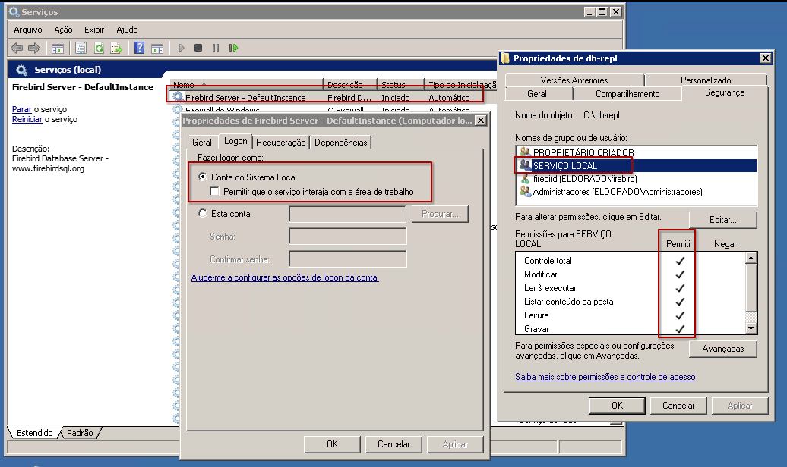
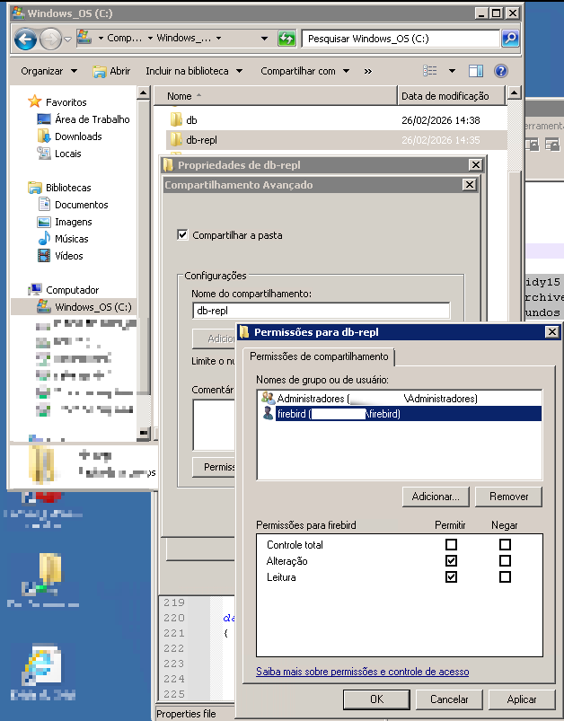

Definindo nosso Ambiente
Para este guia, vamos assumir o seguinte cenário de "campo de batalha":
- Servidor Publicador: Um Windows Server com Firebird 5 instalado em
c:\fb5. O diretório dos bancos de dados éc:\fdb. O proprietário desta pasta é o usuárioLocalSystem, o mesmo processo que gerencia o serviço do Firebird no Windows. - Servidor Leitor: Um Linux (Debian/Ubuntu) pronto para receber os dados em
/var/fdb. - Os Bancos de Dados:
acme.fdb: Nosso banco principal de vendas e bigornas.correios.fdb: Nosso banco auxiliar com CEPs e endereços.
- Logs: Neste contexto, os logs são os arquivos que o Firebird gera para registrar as
mudanças no banco de dados. Eles são usados para replicar as mudanças para outros servidores. Não confuda com
os
arquivos de log de aplicações como
firebird.log,error.log, etc.
O QUE É (E porque você deveria se importar)
Imagine que você tem um banco de dados e quer um "dublê" dele em outro servidor. A replicação assíncrona é exatamente isso: o servidor principal (Publicador) anota tudo o que aconteceu e, de tempos em tempos, manda essas notas para o servidor secundário (Leitor) aplicar. É como se o Publicador enviasse cartas e o Leitor as lesse para atualizar o seu próprio diário.
A vantagem? Se o servidor principal explodir (metaforicamente, esperamos), você tem um reserva quase idêntico. A desvantagem? "Quase" porque, como é assíncrono, pode haver um pequeno atraso (delay). Nada é perfeito, nem mesmo o café.
- Versões iguais: Não tente replicar do Firebird 4.0 para o 5.0. É como tentar rodar fita VHS num PlayStation 5. Mantenha os servidores na mesma versão (ou muito próximas).
- Chaves Primárias: Sem PK, sem replicação. O Firebird precisa saber exatamente *qual* registro mudar. Sem identidade, ele se perde.
Lado PUBLICADOR: O Chefe que anota tudo
No Windows, crie um usuário local chamado firebird. Ele será nosso "operário padrão" para
permissões de arquivos e acessos de rede. Não precisa de privilégios de administrador, apenas uma senha forte.
1. Momento de Preparação (Parando o Serviço)
Antes de mexermos nas configurações internas do Firebird, precisamos garantir que o motor esteja desligado. No Windows, abra o Prompt de Comando (CMD) como Administrador e execute:
net stop FirebirdServerDefaultInstanceOu, se preferir o caminho visual, abra o services.msc (Serviços), localize o Firebird
Server e mande-o parar por lá.
FirebirdServerDefaultInstance pelo nome da sua instância.
2. Configurando o Replicador (replication.conf)
Vá até c:\fb5\replication.conf. Procure por "(for the primary side)". No final dele,
vamos dizer onde ele deve guardar as anotações (o "Journal"). Abra o arquivo com um editor de texto o arquivo
c:\fb5\replication.conf e então acrescente ao seu final o que deve ser replicado, a saber:
#
# Minha replicação - O DIÁRIO DO CHEFE
#
database = c:\fdb\acme.fdb
{
# Pasta onde os rascunhos são criados (Journal)
journal_directory = c:\fdb-repl\journal\acme
# Pasta onde as notas prontas são arquivadas para o Leitor buscar
journal_archive_directory = c:\fdb-repl\archive\acme
# Tempo para fechar a nota e mandar pro arquivo (60=1m; 900=15m; 1800=30m; 3600=60m)
journal_archive_timeout = 60 # em segundos (60=1m; 900=15m; 1800=30m; 3600=60m)
verbose_logging = true
}
database = c:\fdb\correios.fdb
{
journal_directory = c:\fdb-repl\journal\correios
journal_archive_directory = c:\fdb-repl\archive\correios
journal_archive_timeout = 60 # em segundos (60=1m; 900=15m; 1800=30m; 3600=60m)
verbose_logging = false
}- database: Caminho físico completo do banco de dados no servidor Publicador.
- journal_directory: O "rascunho" em tempo real. É aqui que o Firebird anota cada INSERT, UPDATE e DELETE no momento em que acontecem.
- journal_archive_directory: O "centro de expedição". Quando o rascunho é fechado, ele vem para cá para ser coletado pela réplica.
- journal_archive_timeout: O tempo máximo (em segundos) que o Firebird espera antes de
fechar o "rascunho" atual e enviá-lo para a expedição.
Entenda o ciclo: Para não sobrecarregar o sistema criando centenas de pequenos arquivos por segundo, o Firebird acumula as mudanças na pastajournal. Quando este tempo acaba, ele "lacra o pacote", move o arquivo para a pastaarchivee limpa o rascunho para começar um novo. É na pastaarchiveque o servidor Leitor buscará as novidades para aplicar na réplica. - verbose_logging: Se
true, o Firebird detalha cada passo da replicação no arquivofirebird.log. Útil para debug.
Supondo que seu banco de dados esteja em c:\fdb, vamos criar uma nova pasta centralizadora de
nossas replicações. Vamos chamá-la de C:\fdb-repl.
C:\fdb-repl e não uma subpasta dentro de C:\fdb?
- Isolamento de Permissões: Fica muito mais fácil (e seguro) dar permissões de rede apenas
para a pasta de logs, sem correr o risco de expor seus arquivos
.fdboriginais. - Performance: Em servidores de alta carga, você pode colocar essa pasta num disco físico diferente, evitando a competição por I/O entre os arquivos de dados e os arquivos de logs.
- Organização: Facilita backups, monitoramento de cotas de disco e limpezas periódicas sem misturar "arquivos vivos" com "logs temporários".
3. Segurança Máxima (Permissões e Herança)
Tanto para a pasta dos seus bancos (c:\fdb) quanto para a de replicação
(c:\fdb-repl), precisamos de uma configuração profissional para evitar bisbilhoteiros:
Clique com o botão direito na pasta, depois em Propriedades, depois em Segurança, depois em Avançadas. Clique em Desabilitar Herança e escolha "Remover todas as permissões herdadas deste objeto". Agora adicione apenas estes usuários com Controle Total:
firebird(o usuário que sugerimos criar)AdministradoresServiço Local(SYSTEM)Proprietário Criador(Creator Owner)
Lembre-se: Sem o motor do Firebird (LocalSystem/firebird) ter acesso total aqui, nada funciona.

Nota para Linux: No pinguim basta garantir que as pastas tenham o usuário
firebird:firebird como dono. Ex: sudo chown -R firebird:firebird /var/fdb-repl
4. Estrutura Física das Pastas
Dentro dessa pasta fdb-repl, o Firebird precisa de duas pastas para trabalhar:
journal: Este é o espaço de trabalho imediato. Sempre que ocorre uma mudança no banco, o Firebird anota aqui em "tempo real". Pense nisso como o rascunho de um diário que nunca para de ser escrito.archive: Este é o centro de expedição. Quando o rascunho (journal) atinge um certo tamanho ou tempo, o Firebird o "fecha", lacra o pacote e o move para cá. É desta pasta que os logs serão lidos para serem enviados ou buscados pelo lado leitor (réplica).
No final, sua estrutura física de pastas deve ficar exatamente assim:
# Estrutura completa para nossos dois bancos de exemplo:
c:\fdb-repl\journal\acme
c:\fdb-repl\journal\correios
c:\fdb-repl\archive\acme
c:\fdb-repl\archive\correios5. Compartilhando as pastas fdb-repl e fdb
A pasta c:\fdb-repl precisa ser visível para o Linux para que a ponte funcione. Vamos criar
um compartilhamento seguro:
Agora precisamos fazer com que o Linux enxergue a pasta c:\fdb-repl do Windows. Vamos usar o nome
de rede fdb-repl.
- Nas permissões de Compartilhamento e Segurança (NTFS), remova o grupo "Todos" (Everyone).
- Dê acesso de Leitura (e Controle Total no NTFS) para os mesmos usuários de antes:
firebirdeAdministradores.

Repita o processo para a pasta c:\fdb, criando o compartilhamento fdb e compartilhe
com as mesmas pessoas do compartilhamento anterior. Utilizaremos esse compartilhamento mais adiante.
Lado LEITOR: O Nó de Réplica
Aqui o servidor vai apenas "ouvir" e aplicar o que vier do Publicador. Vamos supor que seja um Linux, porque é mais elegante (e provável).
1. Momento de Preparação (Parando o Serviço)
Antes de configurar o Leitor, precisamos garantir que o motor esteja desligado para que possamos mexer nas engrenagens com segurança. No Linux, pare o serviço do Firebird:
sudo systemctl stop firebird2. Criando o quartinho das notas (Landing Zone)
O servidor Leitor precisa de um diretório físico para receber os arquivos de journal vindos do Publicador.
Vamos criar a estrutura em /var/fdb-repl. Esta será a nossa "zona de pouso" (Landing Zone):
sudo mkdir -p /var/fdb-repl
# Garanta que o Firebird consiga ler e escrever aqui:
sudo chown -vR firebird:firebird /var/fdb-repl
sudo chmod -vR 770 /var/fdb-replPor que? Porque o Firebird Leitor vai ficar "vigiando" estas pastas. Nós iremos montá-la
ligando-a à c:\fdb-repl que criamos no servidor Windows. Assim que o lado PUBLICADOR criar um
arquivo
dentro de c:\fdb-repl\archive\<nome_do_banco>, ele aparecerá aqui e o Firebird Leitor o
processa
imediatamente. Se ele não tiver permissão para ler ou apagar o arquivo depois de processado, a replicação vai
engasgar, e foi por isso que criamos no servidor Windows o usuário firebird e demos permissão
total a ele, porque usaremos este usuário para montar o compartilhamento no Linux.
3. A Ponte entre Mundos (Ligação com o Windows)
Para que a mágica aconteça, o Linux precisa "enxergar" a pasta de arquivos do Windows como se fosse uma pasta local. Vamos construir uma ponte transparente usando o protocolo SMB (Samba/CIFS). Primeiro, vamos criar um arquivo de credenciais escondido para que sua senha não fique exposta no histórico de comandos:
# Crie o arquivo de credenciais
sudo nano /etc/cifs-credentials.agente_firebird
# Cole dentro dele e informe as credenciais usadas pelo usuário firebird no Windows:
username=firebird
password=sua_senha_forte_aqui
domain=
Salve e saia (Ctrl+O, Enter, Ctrl+X)
Dê permissão apenas para o root ler (segurança):
sudo chmod 600 /etc/cifs-credentials.agente_firebirdAntes de montar a pasta, precisamos nos certificar de que temos as ferramentas necessárias:
sudo apt-get install cifs-utilsAgora, vamos inaugurar a nossa ponte (montar a pasta):
# Monte a pasta (usando vers=2.0 que é mais seguro/rápido)
sudo mount -t cifs //IP_DO_WINDOWS/fdb-repl /var/fdb-repl -o credentials=/etc/cifs-credentials.agente_firebird,iocharset=utf8,vers=2.0,uid=firebird,gid=firebird,file_mode=0660,dir_mode=0770Verifique se a ponte está firme, execute:
ls -l /var/fdb-replSe vir as pastas archive e journal, parabéns: o Linux agora tem um pé dentro do
Windows! Se der erro, verifique o IP e as permissões que demos ao usuário firebird no Windows.
Se deu certo, vamos desmontar a pasta, execute:
sudo umount /var/fdb-replVisto que essa ponte deve ser permanente e precisa sobreviver a reboots, vamos registrá-lo no arquivo
/etc/fstab:
sudo nano /etc/fstabVá até o final do arquivo e adicione a seguinte linha:
# Montando o compartilhamento //IP_DO_WINDOWS/fdb-repl em /var/fdb-repl
//IP_DO_WINDOWS/fdb-repl /var/fdb-repl cifs credentials=/etc/cifs-credentials.agente_firebird,iocharset=utf8,vers=2.0,uid=firebird,gid=firebird,file_mode=0660,dir_mode=0770 0 0Salve e saia (Ctrl+O, Enter, Ctrl+X).
Mudanças no fstab só têm efeito após reiniciar o servidor. Para evitar este reinício, execute os
comandos abaixo:
Note: recarregar o sistema de controle do linux garantirá que o novo ponto de montagem
seja reconhecido.
systemctl daemon-reloadE finalmente, podemos testar montando nossa ponte
sudo mount -aAgora, poderá repetir o teste
ls -l /var/fdb-replSe na listagem de arquivos aparecerem as pastas archive e journal, sua "ponte" agora
é indestrutível e resistirá a reinicializações!
4. O Diário de Erros (Importante!)
Se algo der errado, você vai querer saber. Crie o log:
sudo mv /opt/firebird/replication.log /opt/firebird/replication.log.$(date +%Y%m%d_%H%M%S)
sudo touch /opt/firebird/replication.log
sudo chown firebird:firebird /opt/firebird/replication.log5. Automatizando a Autenticação
Para que o motor de replicação consiga "conversar" com os bancos de dados sem interrupções e sem pedir senha a
todo momento, utilizaremos um recurso do Linux chamado variáveis de ambiente globais. Ao
configurar o SYSDBA no arquivo /etc/environment, o serviço do Firebird ganha um "passe
livre" para ler e aplicar os logs de forma automática, silenciosa e totalmente transparente. Execute
sudo nano /etc/environmentAdicione as seguintes linhas ao arquivo:
ISC_USER=SYSDBA
ISC_PASSWORD=masterkey
FIREBIRD_MSG=/opt/firebirdOnde masterkey é a senha do usuário SYSDBA do Firebird no lado LEITOR.
Salve e saia (Ctrl+O, Enter, Ctrl+X). Para efetivar estas instruções sem reiniciar o servidor, execute:
source /etc/environment6. A Primeira Cópia
Chegou a hora do transplante. Mas antes de prosseguir, o serviço do Firebird deve estar desligado tanto no Publicador quanto no Leitor.
No Publicador (Windows), execute no terminal:
net stop FirebirdServerDefaultInstanceDica: Você também pode fazer isso visualmente pelo services.msc.
No Leitor (Linux), execute no terminal:
sudo systemctl stop firebirdAgora, podemos realizar a cópia dos bancos porque é imperativo que ambos os lados comecem a vida exatamente IGUAIS.
Vamos montar a unidade de rede do Windows no Linux para facilitar o processo:
sudo mkdir -p /mnt/publicadorDepois montamos essa pasta com a nossa credencial apontando para o servidor PUBLICADOR Windows:
sudo mount -t cifs //IP_DO_WINDOWS/C$/fdb /mnt/publicador -o credentials=/etc/cifs-credentials.agente_firebird,iocharset=utf8,vers=2.0,uid=firebird,gid=firebird,file_mode=0660,dir_mode=0770Onde C$ corresponde ao drive C:\ do Windows (unidade administrativa oculta).
Agora, certifique-se de que a montagem foi realizada com sucesso:
ls -l /mnt/publicadorEntão, tendo listado os arquivos, copie para o lado LEITOR, os bancos que estão no lado PUBLICADOR:
cp /mnt/publicador/acme.fdb /var/fdb/acme.fdb
cp /mnt/publicador/correios.fdb /var/fdb/correios.fdbDepois disso, podemos desmontar a pasta, execute:
sudo umount /mnt/publicadorAgora que temos os bancos exatamente iguais tanto o lado PUBLICADOR quanto o LEITOR, ajuste a posse dos arquivos no Linux:
sudo chown -vR firebird:firebird /var/fdbAgora, vamos configurar o Leitor (replication.conf no Linux). Execute:
sudo nano /opt/firebird/replication.confEm /opt/firebird/replication.conf, adicione um bloco para cada banco:
database = /var/fdb/acme.fdb
{
# Onde o Leitor deve buscar as "notas" (arquivos de journal) que o Publicador enviou
journal_source_directory = /var/fdb-repl/archive/acme
# Ativa o log detalhado em replication.log. Ótimo para saber o que está acontecendo por baixo do capô.
verbose_logging = true
# Tempo (em segundos) que o Leitor descansa quando não há notas novas para processar
apply_idle_timeout = 60
# Tempo (em segundos) de espera antes de tentar novamente após um erro de processamento
apply_error_timeout = 60
}
database = /var/fdb/correios.fdb
{
# Landing Zone para the segundo banco
journal_source_directory = /var/fdb-repl/archive/correios
verbose_logging = true
# Intervalo de verificação quando ocioso
apply_idle_timeout = 60
# Intervalo de recuperação após erros
apply_error_timeout = 60
}apply_idle_timeout:
Utilizamos apply_idle_timeout = 60 (1 minuto) para fins de teste, permitindo que acompanhemos a
replicação quase em tempo real. No entanto, em um ambiente de produção, você pode ajustar
esse
tempo conforme a necessidade de atualização da sua réplica e a carga do servidor:
- 5 minutos: 300 segundos
- 10 minutos: 600 segundos
- 15 minutos: 900 segundos
- 30 minutos: 1800 segundos
Ou qualquer outro tempo em segundos que você preferir.
Dica de Segurança: Protegendo a Integridade (Read Only)
Uma réplica, por definição, não deve ser alterada manualmente — senão ela perde a sincronia com o Publicador. Para evitar acidentes, o Firebird exige que arquivos de banco de dados estejam em modo replica read_only, caso contrário ele rejeitará a replicação e os bancos copiados serão bases regulares como qualquer outro banco e não uma replica de outra base.
Use o utilitário gfix para alterar o cabeçalho do banco de dados, primeiro o banco
/var/fdb/acme.fdb:
sudo /opt/firebird/bin/gfix -replica read_only /var/fdb/acme.fdbDepois o banco /var/fdb/correios.fdb:
sudo /opt/firebird/bin/gfix -replica read_only /var/fdb/correios.fdbA HORA DA VERDADE: Ativando a Replicação
Agora que o palco está montado, os atores estão em seus lugares e o ponto de transporte (CIFS) está operante, chegou a hora de apertar o botão "ON".
1. Acordando o PUBLICADOR
Como paramos tudo para a cópia inicial, a primeira coisa é religar os motores do PUBLICADOR (Windows), execute no CMD:
net start FirebirdServerDefaultInstanceOu use o services.msc para fazê-lo visualmente.
2. Habilitando os bancos
Use uma ferramenta de acesso SQL (como IbExpert, FlameRobin ou isql) apenas no servidor Publicador. Conecte-se a cada um dos seus bancos de dados individualmente e execute estes comandos para despertar a replicação:
-- Execute no acme.fdb
ALTER DATABASE ENABLE PUBLICATION;
-- Execute no correios.fdb
ALTER DATABASE ENABLE PUBLICATION;3. Escolhendo o que será replicado
Este é o "pulo do gato": o comando de ENABLE PUBLICATION que rodamos no passo anterior apenas liga
o motor de replicação, mas ele ainda não sabe o que deve observar. É como ligar uma câmera sem apontar para
lugar nenhum. Você precisa dizer explicitamente quais tabelas devem ser monitoradas:
Todas as tabelas:
ALTER DATABASE INCLUDE ALL TO PUBLICATION;E depois remover tabelas indesejadas na replicação:
ALTER DATABASE EXCLUDE TABLE PLG$PROF_SESSIONS, PLG$PROF_STATEMENTS, PLG$PROF_CURSORS, PLG$PROF_RECORD_SOURCES, PLG$PROF_REQUESTS, PLG$PROF_PSQL_STATS, PLG$PROF_RECORD_SOURCE_STATS FROM PUBLICATION;Outra alternativa é selecionar apenas as tabelas essenciais (Seletivo):
ALTER DATABASE INCLUDE TABLE CLIENTES, VENDAS TO PUBLICATION;SELECT RDB$TABLE_NAME FROM RDB$PUBLICATION_TABLES;4. Acordando o LEITOR
Agora é a vez do LEITOR (Linux). Certifique-se de que o motor dele também esteja rodando para que ele possa começar a processar os arquivos que o Publicador vai enviar:
sudo systemctl start firebird5. O Teste de DNA (Verificação)
Como saber se a "mágica" realmente aconteceu? Vamos criar um rastro deliberado no lado do Publicador. Via qualquer programa de acesso a banco de dados, como FlameRobin ou IBExpert, execute:
CREATE TABLE TESTE_REPLICA (ID INT PRIMARY KEY);
COMMIT;Este comando cria uma tabela chamada TESTE_REPLICA com uma coluna ID do tipo
INT e define ela como a chave primária. Mas apenas a criação da tabela não é suficiente para que a
replicação funcione. O Firebird precisa saber que essa tabela deve ser publicada na lista de replicação, então
execute o seguinte comando SQL no banco do Publicador:
ALTER DATABASE INCLUDE TABLE TESTE_REPLICA TO PUBLICATION;Feche o gerenciador de banco de dados, abra o Explorer e aponte-o para a pasta
c:\fdb-repl\journal\acme e veja se surgem novos arquivos de journaling a medida que
alterações são feitas no banco de dados. Notará que alguns deles, depois de 60 segundos vão sumindo, na
realidade, estão sendo processados e seguindo para nossa área de expedição c:\fdb-repl\archive\acme
que você também poderá observar usando o Explorer. Se conseguir enxergar essa movimentação de arquivos de lá
para cá, você entenderá como o processo de replicação funciona. Esse método lembra muito como bancos antigos
funcionavam usando o protocolo Named Pipes, estabelecendo um arquivo em rede para que os serviços se
comunicassem.
Assim que começar a notar que arquivos em c:\fdb-repl\archive\acme estão sumindo, você sabe que o
lado Leitor está consumindo-os, o que por si só é indicativo de que a replicação está funcionando.
Mas se você só acredita vendo, pode usar o gerenciador de banco de dados e conectá-lo a base acme
no lado do Leitor e observar se a tabela TESTE_REPLICA apareceu lá, se sim,
parabéns: seu motor de replicação está em perfeito estado!
Mas e se não aparecer? Calma, vamos verificar o que está acontecendo. Execute no lado Leitor o comando:
tail -f /opt/firebird/replication.logObservar este arquivo de log da replicação mostrará o que está acontecendo.
Se mostrar algo como:
Database: /var/fdb/acme.fdb
VERBOSE: No new segments found, suspending
Significa que o Leitor não encontrou novos segmentos para processar, portanto ele suspende a operação e tentará novamente em 60 segundos. Mas se houver falhas de operações com arquivos, ele também as mostrará e por isso é tão importante verificar o log.
Lembre-se de que no replication.conf você configurou o parametro apply_idle_timeout
que define
o tempo de espera quando ocioso e o parametro apply_error_timeout que define o tempo de espera após
um erro.
Portanto, você deve aguardar o tempo configurado (em nosso exemplo, 60 segundos).